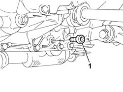
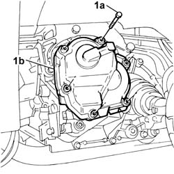

2110C30 gearbox rear cover - r + r.
- Path
- Procedures > 21 GEARBOX UNIT > 2110 MANUAL GEARBOX WITH DIFFERENTIAL > 2110C gear cases and covers of manual gearbox with differential > 2110C30 gearbox rear cover - r + r.
- Kind
- repair procedure (removal / refitting; the operation number is the code)
- Applies to
- all engines; all production periods
- Interactive page
- https://sloeber94.github.io/elrnDB-fDbl/en/#/2584585
Applies to: all engines; all production periods
 Removing
Removing
 Refitting
RefittingPlace the car on a ramp.
Op. 7055B54 PROTECTION/GUARD UNDER ENGINE - R.R.
Position a suitable container to collect the gearbox oil.
1. Undo the plug and drain the gearbox/differential fluid.

Applies to: all engines; all production periods
1. Undo the bolts (1a) and remove the rear cover (1b).

Applies to: all engines; all production periods
Refitting
RemovingFit the rear cover and secure it with the bolts.
Screw on the gearbox oil drain plug.
 | Fastening | Component | Ø | Value (daNm) |
|---|---|---|---|---|
- | Plug | GEAR CASING PADS | M22 x 1.5 | 3.6 |
Op. 0010T41 MANUAL GEARBOX OIL - CHECK LEVEL AND TOP UP IF NECESSARY
Op. 7055B54 PROTECTION/GUARD UNDER ENGINE - R.R.
Remove the vehicle from the ramp.